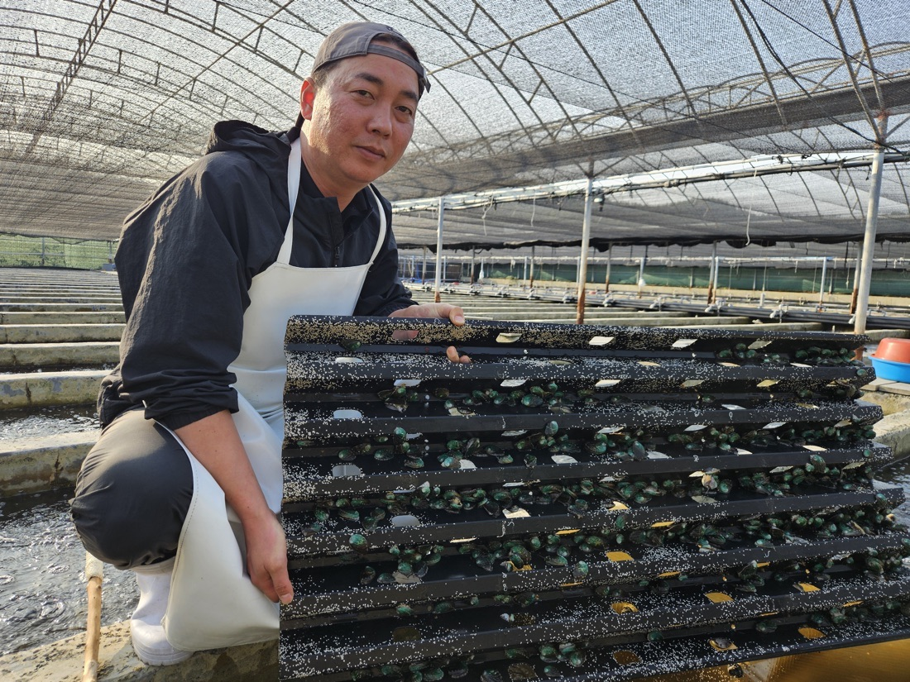

Abalone Porridge
A comforting rice porridge made with abalone.

JINDO, SOUTH KOREA
For four generations, our family has farmed the waters of Jindo. Today, we bring its abalone and seaweed to tables around the world.
Explore products
OUR STORY
Yonggane is the seafood brand of Gijeok Fisheries. We raise our own abalone and seaweed and process them in Jindo for customers in Korea and overseas.
OUR PRODUCTS
A comforting rice porridge made with abalone.

A classic Korean soup with abalone and seaweed.

A hearty Korean soup made with eel.

FOODSERVICE & WHOLESALE
Cooked abalone for foodservice and meal manufacturers. Contact us about sliced formats.
QUALITY & EXPORT

BUSINESS INQUIRIES
Contact Gijeok Fisheries for wholesale, product specifications and export inquiries.